Metabolome and Microbiome Correlation Analysis Report
Project Information
Project Number: MetMicro_demo
Project Name: MetMicro_demo_20250416
Report Date: 2025-06-26
Report Number: MetMicro_demo_20250416
Research Overview
With the rapid development of multi-omics technologies, it has become possible to shift from detailed reductionist studies to systematic, holistic research. Data from different omics disciplines complement and validate each other, collectively elucidating gene functions. Genomics reveals the relationship between gene structure and function through whole-genome sequencing and functional annotation. Transcriptomics investigates gene transcription profiles and regulatory mechanisms at a global level within cells. Proteomics studies the composition and dynamic changes of proteins in organisms, as proteins are the direct executors of biological functions. Metabolomics focuses on the changes in metabolites or their temporal patterns in organisms under external stimuli or perturbations, making it the discipline closest to phenotypes[1]. The integration of multi-omics data enables a comprehensive understanding of biological systems. As research at individual levels matures, the transition from parts to the whole becomes an inevitable trend.
The host harbors a vast and complex microbial community, and alterations in the microbiome structure are closely associated with the onset and progression of diseases. The metagenome represents the collective genetic material of all microorganisms in a given environment and serves as a discipline for studying microbial community composition, functional genes, and metabolic products. Metagenomic sequencing technologies enable the analysis of microbial communities, revealing their interactions with the host and further uncovering the relationships among microbial population structure, evolutionary dynamics, functional activity, and environmental factors.Another approach to studying microbial communities is 16S rDNA amplicon sequencing, which typically targets one or several hypervariable regions by using universal primers designed from conserved regions for PCR amplification, followed by sequencing and taxonomic identification of the variable regions. 16S rDNA amplicon sequencing has become a key tool for analyzing the composition and structure of microbial communities in environmental samples.Metabolomics measures metabolic changes in the host ecosystem at a specific time point. Therefore, to investigate how shifts in the host-associated microbial community may influence phenotypic outcomes, it is essential to integrate metabolomic and microbial data through correlation analysis. Figure 1 illustrates the workflow for such multi-omics integration.
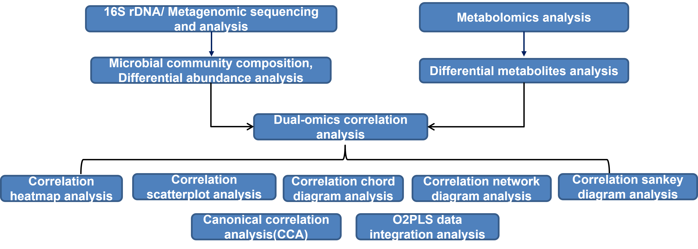
Figure 1. Workflow for metabolome and microbiome correlation analysis
Project Status
1. Sample grouping information
Table1.1 Sample grouping information
| Meta Sample | Meta Group | Bact Sample | Bact Group |
|---|---|---|---|
| AA_1 | demo_AA | Aa1 | demo_Aa |
| AA_2 | demo_AA | Aa2 | demo_Aa |
| AA_3 | demo_AA | Aa3 | demo_Aa |
| BB_1 | BB | Bb1 | Bb |
| BB_2 | BB | Bb2 | Bb |
| BB_3 | BB | Bb3 | Bb |
Note: The information in each column is as follows: (1) Meta Sample: sample name (2) Meta Group: metabolome grouping name (3) Bact Sample: 16S/macrogenome sample name (4) Bact Group: 16S/macrogenome grouping name
2. Comparison pair information
Table1.2 Comparison pair information
| Meta Group | Bact Group |
|---|---|
| demo_AA.vs.BB | demo_Aa-vs-Bb |
Note: The information in each column is as follows: (1) Meta Group: metabolome comparison pair name (2) Bact Group: 16S/macrogenome comparison pair name
Correlation Analysis
1. Correlation heatmap analysis
Perform Spearman correlation analysis between significantly differential bacterial genera (at the genus level) obtained from 16S rDNA or metagenomic sequencing and significantly differential metabolites identified through metabolomics analysis, then visualize the results as a heatmap to assess the association between microbial diversity and metabolites in environmental samples. The Spearman correlation coefficient ranges from -1 to 1，a coefficient < 0 indicates a negative correlation; a coefficient > 0 indicates a positive correlation.; a coefficient = 0 indicates no correlation (zero correlation). The results are presented below[2](see the result file for the high-definition version of the picture).


Figure 1.1 Correlation heatmap (the upper box is the negative ion mode,the lower box is the positive ion mode.)
Note: In the figure, the horizontal axis represents differential bacterial genera, while the vertical axis represents differential metabolites. The color legend on the right indicates correlation coefficients, with red representing positive correlations and blue representing negative correlations. Asterisks (*) mark statistically significant correlations (P-value < 0.05).
Corresponding result catalog: Result/01_corr/.vs./.vs._corr.xls Heatmaps are available at Result/01_corr/.vs./.vs._corrplot_heatmap.{pdf,png}
2. Correlation scatterplot analysis
Based on the Spearman correlation coefficient (r) and P-value between differential bacterial genera and differential metabolites, the top 50 results with the highest absolute |r| values were selected for scatter plot analysis,aiming to identify specific correlations between metabolites and microbial communities. The results are shown below (see the result file for the high-definition version of the picture):
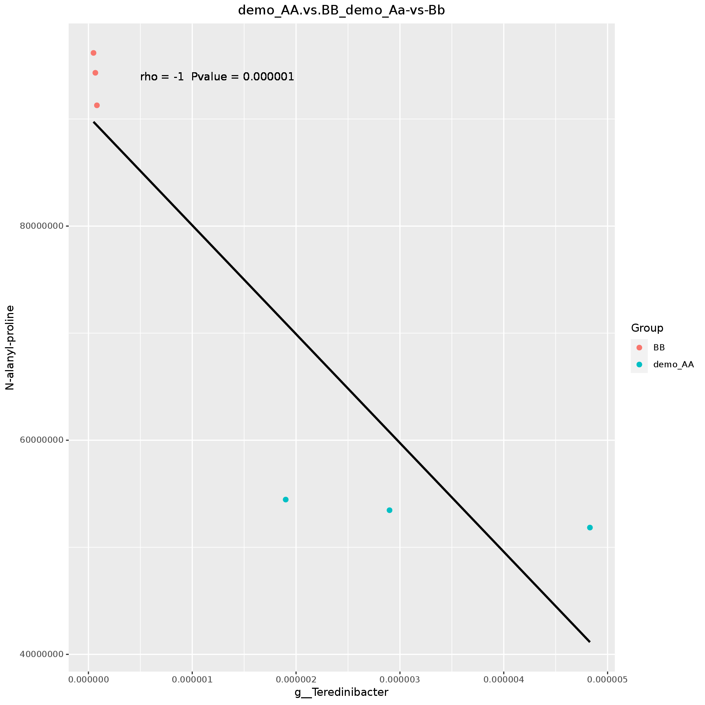
{kind=link}
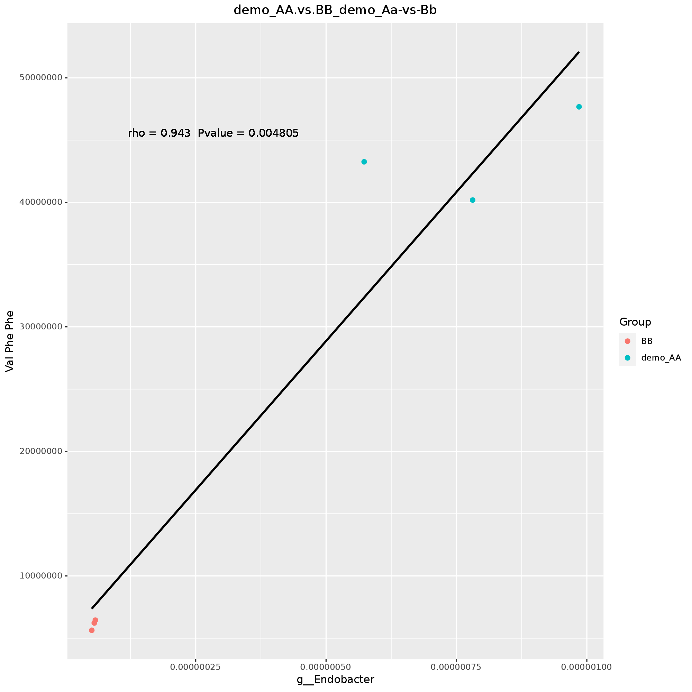
{kind=link}
Figure2.1 Correlation scatterplot analysis (the upper box is the negative ion mode,the lower box is the positive ion mode.)
Note: The x-axis represents the relative abundance values of differential genera, while the y-axis shows the quantitative values (peak areas) of differential metabolites.
Corresponding result catalog：Correlation tables: Result/02_Scatter_plot/.vs./Com__.vs.*_Correlation.xls，Scatter plots: Result/02_Scatterplot/.vs./Com__.vs.*_corrplot.{pdf,png}
3. Correlation chord diagram analysis
A chord diagram is a visualization method for displaying correlations between data, where nodes are arranged radially along the circumference and connected by width-varying chords. Based on the correlation coefficients between differential genera and differential metabolites, the chord diagram reflects the correlations and association strengths among microbial taxa and metabolites in the samples. The results are shown below (see the result file for the high-definition version of the picture):
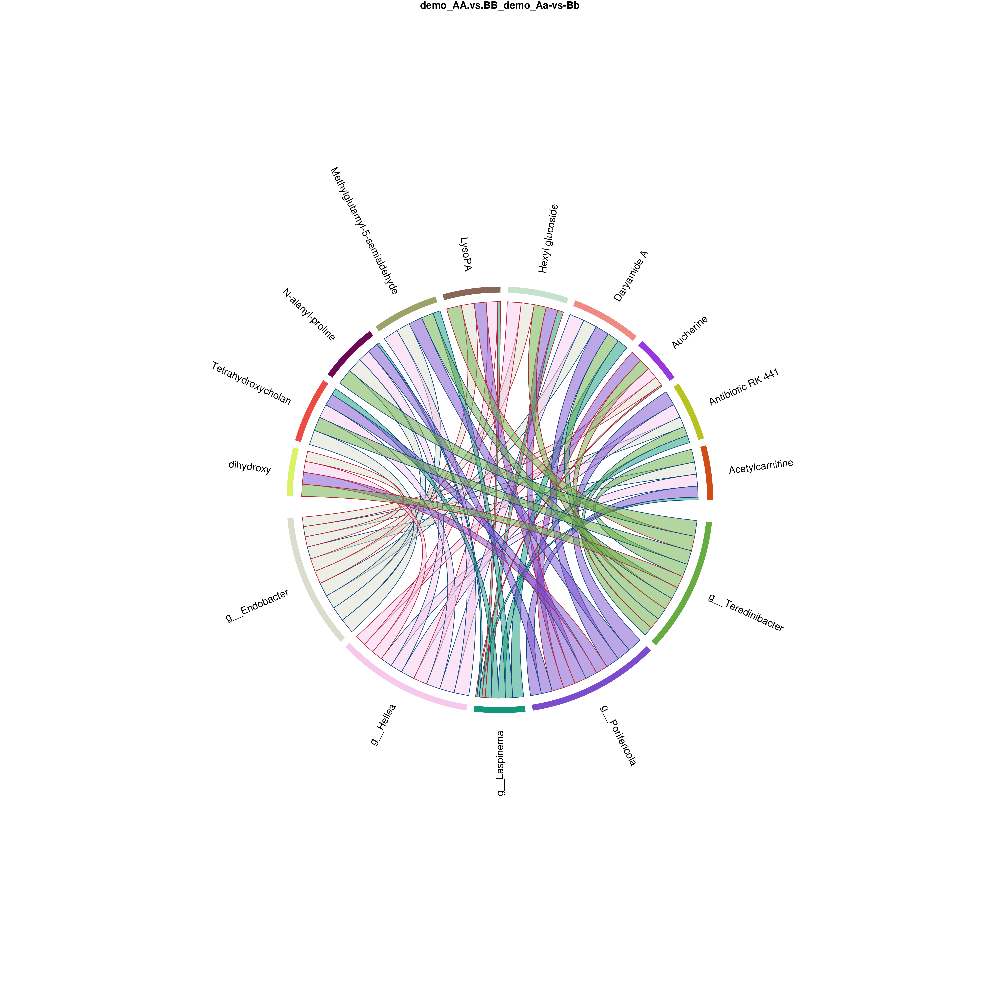
{kind=link}
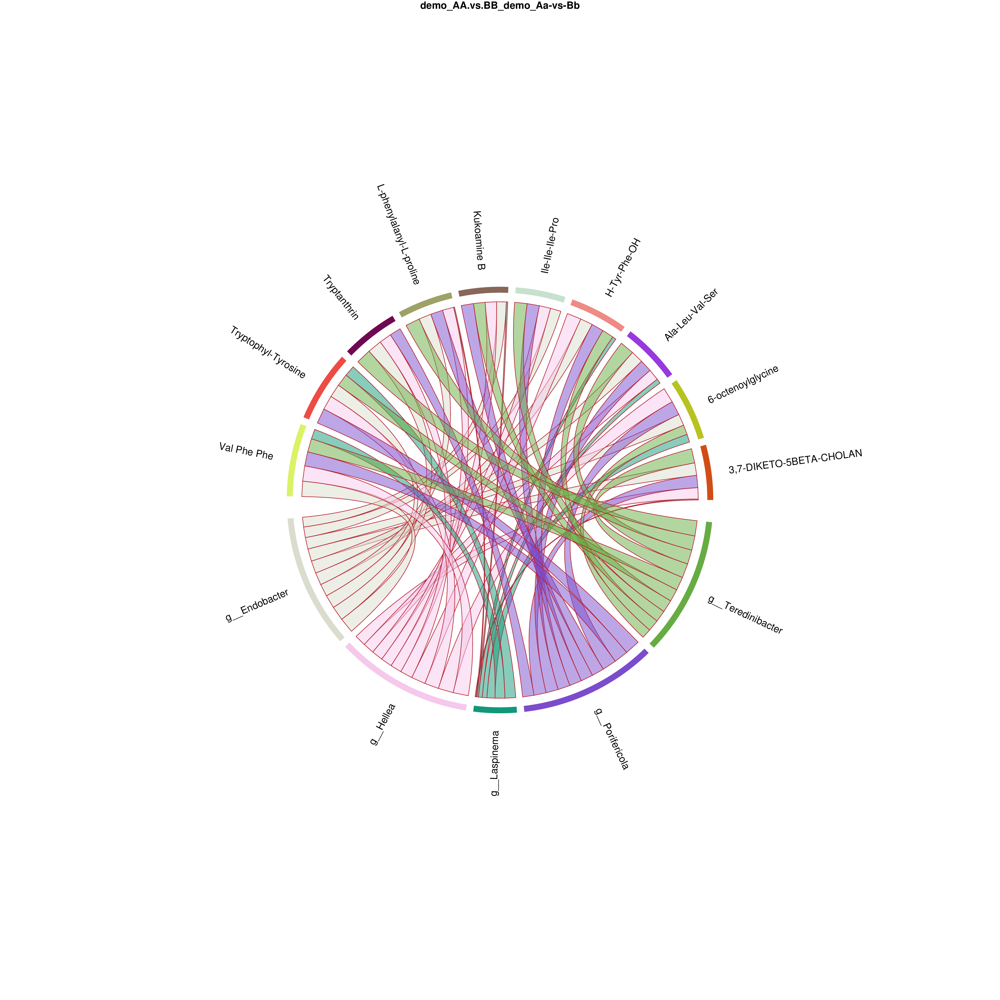
{kind=link}
Figure3.1 Correlation chord diagram (the upper box is the negative ion mode,the lower box is the positive ion mode.)
Note: Nodes represent differential genera and metabolites; chord width indicates correlation strength; chord border color denotes correlation direction (red for positive, blue for negative).
Corresponding result catalog：Correlation tables: Result/03_chord_sankey/*.vs.*/*.vs.*_Chord_Sankey.xls，chord diagram: Result/03_chord_sankey/*.vs.*/*.vs.*.Chord.{pdf,png}
4. Correlation network diagram analysis
A network diagram was constructed based on correlation coefficients between differential bacterial genera and differential metabolites to evaluate key node microorganisms/metabolites within the network, thereby revealing potential correlations between critical microbial taxa and crucial metabolites. The results are presented below (see the result file for the high-definition version of the picture):
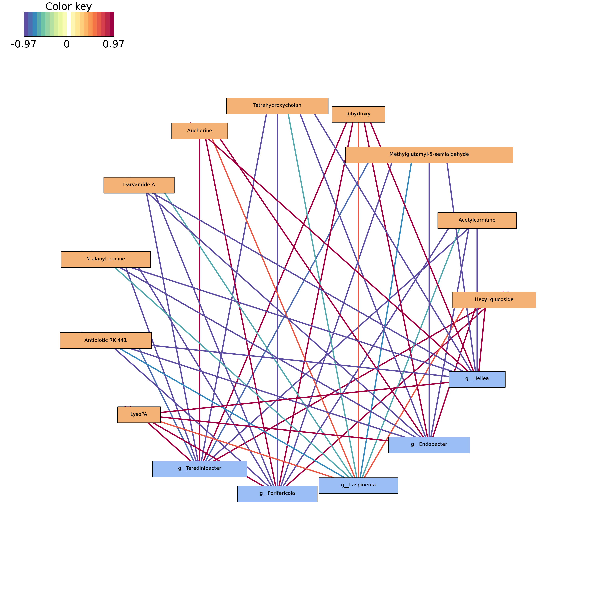
{kind=link}
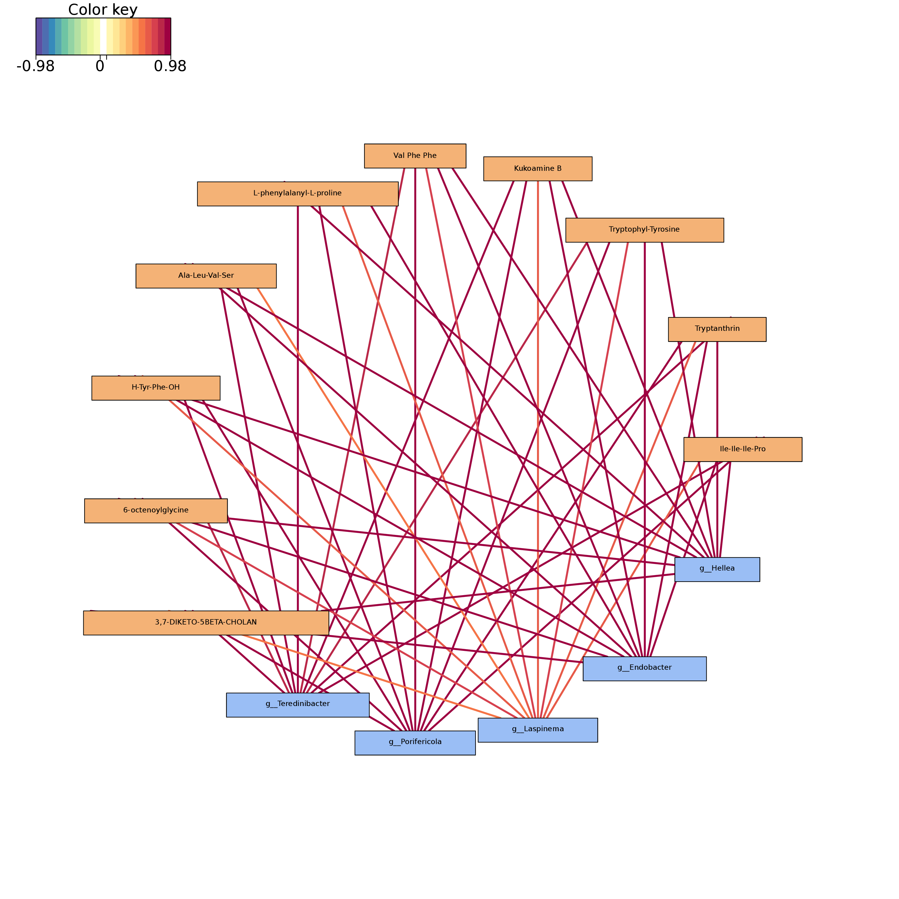
{kind=link}
Figure4.1 Correlation network diagram analysis (the upper box is the negative ion mode,the lower box is the positive ion mode.)
Note: In the diagram, rectangular boxes represent metabolites and bacterial genera - yellow boxes denote metabolites while blue boxes indicate bacterial genera. The connecting lines' colors signify correlation directions: red for positive correlations and blue for negative correlations.
Corresponding result catalog：Network diagram: Result/01_corr/*.vs.*/*.vs.*_corr_net.{pdf,png}
5. Correlation Sankey diagram analysis
A sankey diagram was generated based on correlation coefficients between differential genera and metabolites to visualize relationships between key metabolites and key microbial taxa, illustrating the flow and variation of their correlations. The results are presented below (see the result file for the high-definition version of the picture):
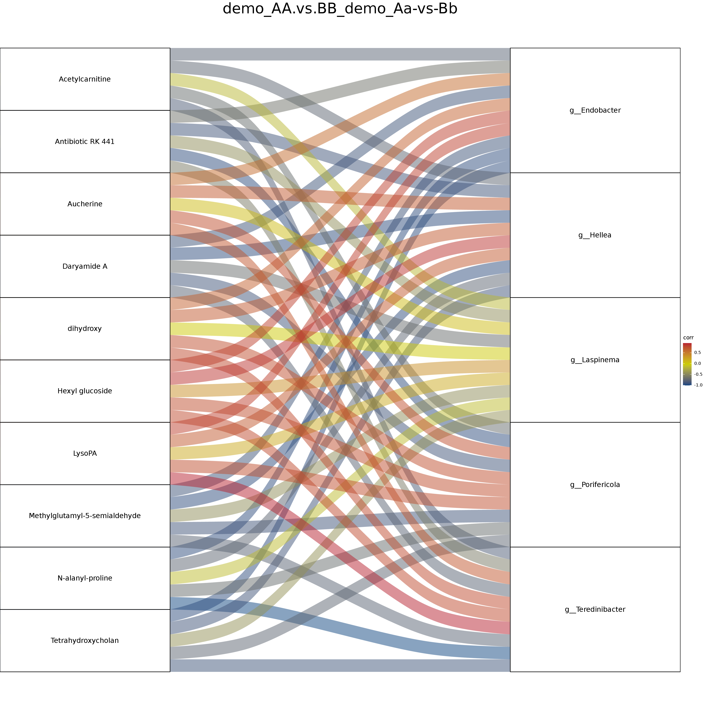
{kind=link}
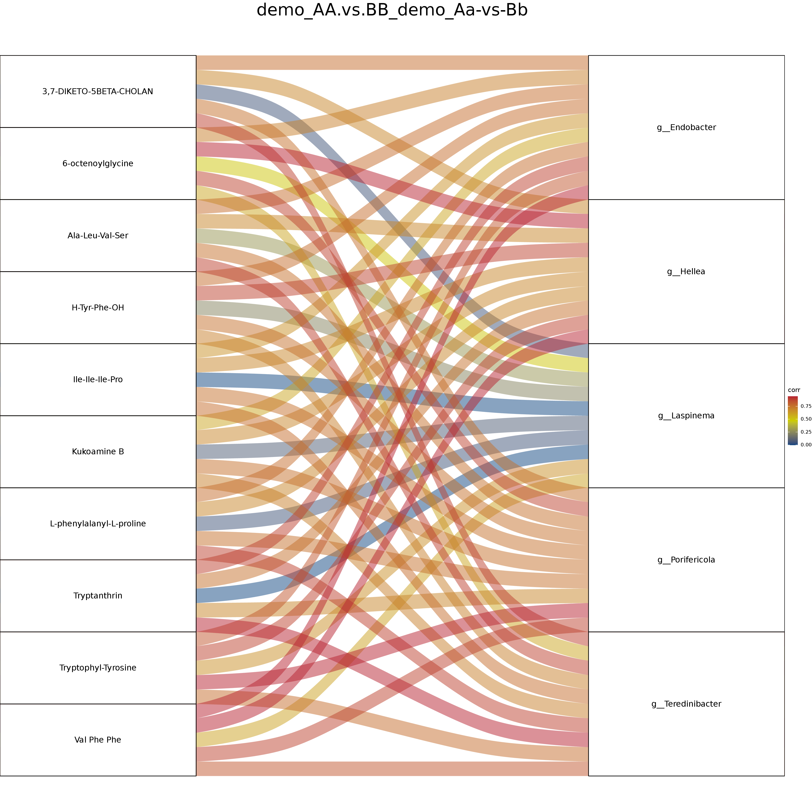
{kind=link}
Figure5.1 Correlation sankey diagram (the upper box is the negative ion mode,the lower box is the positive ion mode.)
Note: The left side represents differential metabolites, while the right side shows differential bacterial genera. Connecting lines indicate correlations, with red denoting positive correlations and blue indicating negative correlations.
Corresponding result catalog: Corrrelation table: Result/03_chord_sankey/*.vs.*/*.vs.*_Chord_Sankey.xls，sankey diagram: Result/03_chord_sankey/*.vs.*/*.vs.*.Sankey.{pdf,png}
6. Canonical correlation analysis
Canonical Correlation Analysis (CCA) is an ordination method that integrates correspondence analysis with multivariate regression. As a multivariate extension of the general linear model, CCA operates under the assumption that all analyzed variables are interrelated. The method derives estimates by applying weights to measured variables and computes variance components of influencing factors, enabling investigation of relationships between metabolites and microbial communities. The results are presented below (see the result file for the high-definition version of the picture).
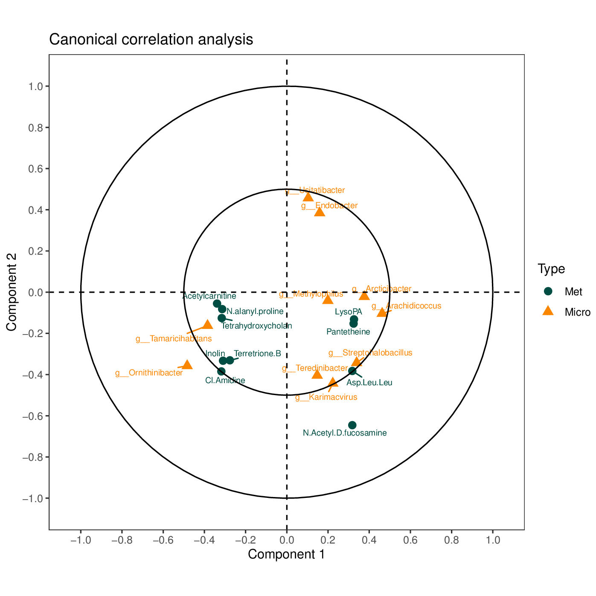
{kind=link}
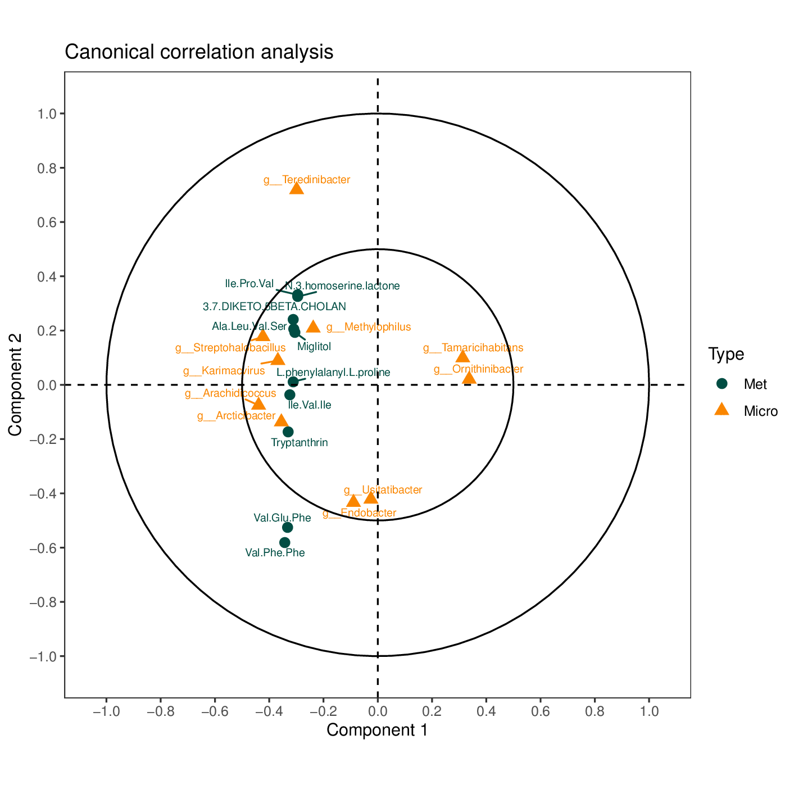
{kind=link}
Figure6.1 Canonical correlation analysis (the upper box is the negative ion mode,the lower box is the positive ion mode.)
Note: Differential metabolites and microbial taxa at various taxonomic levels were first filtered to retain only results with |r| ≥ 0.6 and correlation significance p-value < 0.05. The selected metabolites and microorganisms were then subjected to canonical correlation analysis. The crosshair divides the plot into four regions. Within each region, greater distance from the origin indicates stronger associations，proximity within a quadrant reflects higher correlation between metabolites and microbial taxa.The correlation coefficient of the inner small circle is 0.5, and the correlation coefficient of the outer large circle is 1. The chord formed by the two dots centered on the dot has a positive correlation if the angle is less than 90, a negative correlation if it is greater than 90, and no correlation if the angle is 0，so the metabolite is not correlated with the genus. Metabolites are represented by green dots and genera by yellow triangles.
Corresponding result catalog：Canonical correlation analysis: Result/05_CCA/*.vs.*/*.vs.*_meta_micro_cross-pca.{pdf,png}
7. O2PLS data integration analysis
The two-way orthogonal partial least squares (O2PLS) method performs bidirectional modeling and prediction between two omics datasets to uncover their intrinsic relationships. This appriach identifies both the degree of association and the key metabolites and microbial taxa driving these connections,requiring that the input datasets exhibit underlying relationships. The analysis results display the differential microbial taxa and metabolites associated with the inter-omics relationships, with the top 10 contributing taxa and metabolites labeled by their contribution weights. The results are presented below (see the result file for the high-definition version of the picture):
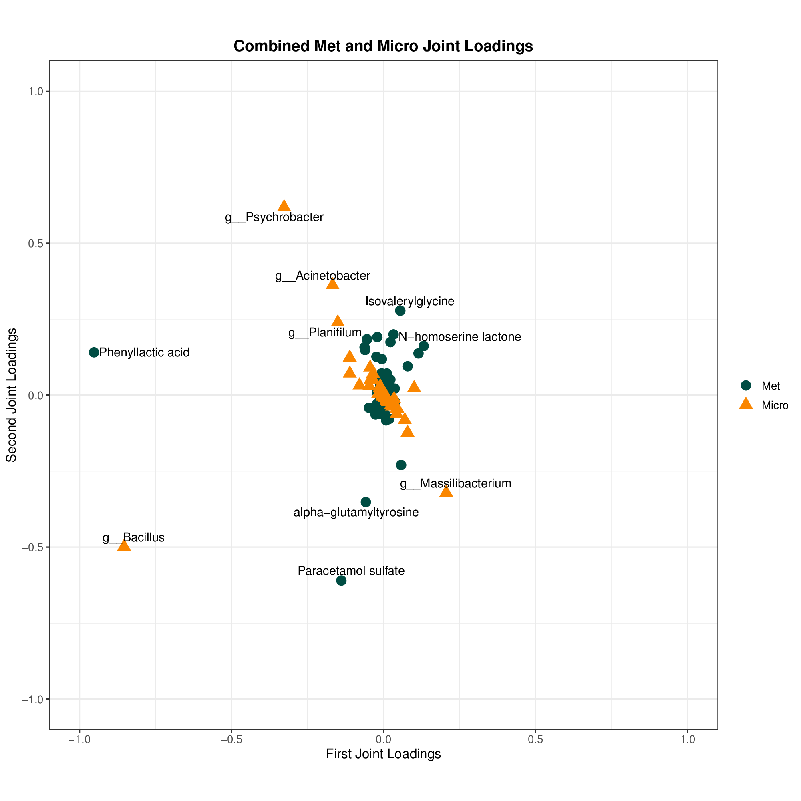
{kind=link}
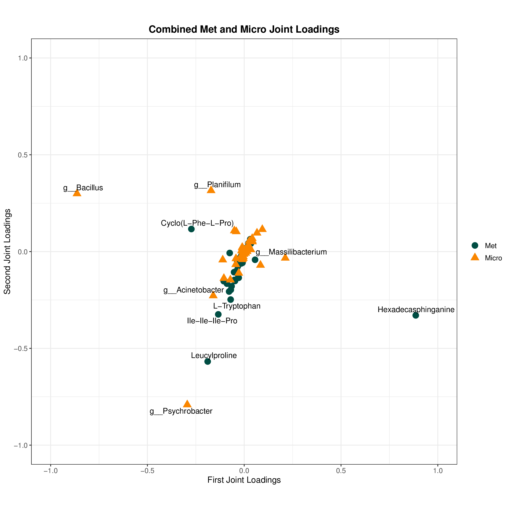
{kind=link}
Figure7.1 O2PLS data integration analysis diagram (the upper box is the negative ion mode,the lower box is the positive ion mode.)
Note: In the figure, green circles represent metabolites while yellow triangles denote microbial taxa. The x- and y-axes display joint scores integrating both metabolomic and microbial datasets. Each point's distance from the origin reflects its weight in the association analysis - greater distances indicate stronger influence of that microbial taxon/metabolite on the other omics dataset. Proximity between points demonstrates their correlation strength, with closer points indicating stronger relationships.
Corresponding result catalog：O2PLS analysis diagram: Result/04_O2PLS/*.vs.*/*.vs.*_met_O2PLS.{pdf,png}
Reference
[1] Dunn, W.B. et al. Procedures for large-scale metabolic profiling of serum and plasma using gas chromatography and liquid chromatography coupled to mass spectrometry. Nature protocols. 6,1060-1083 (2011).[2] Want, E.J. et al. Global metabolic profiling procedures for urine using UPLC–MS. Nature protocols. 5,1005-1018 (2010).
[3] Nie, Zhiqiang et al. “Unraveling the correlation between microbiota succession and metabolite changes in traditional Shanxi aged vinegar.” Scientific reports vol. 7(1), 9240 (2017)
[4] Bouhaddani, SE. et al. Evaluation of O2PLS in Omics data integration. BMC Bioinformatics. 17 Suppl 2,11 (2016).
[5] González, I.et al. Highlighting relationships between heterogeneous biological data through graphical displays based on regularized canonical correlation analysis. Journal of Biological Systems, 17(02), 173-199 (2009).